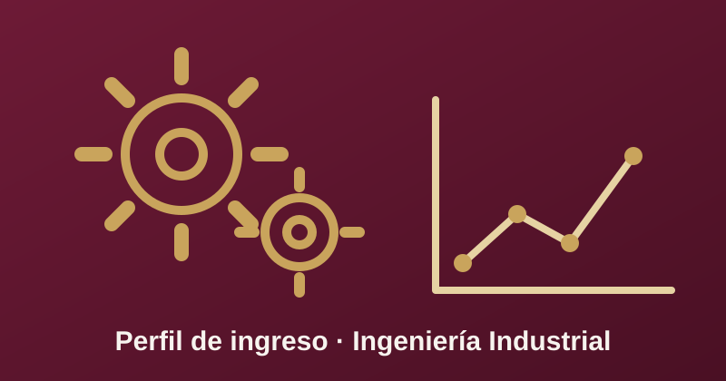

Perfil de Ingreso

Para ingresar a Ingeniería Industrial se requiere haber concluido los estudios de nivel medio superior y contar con competencias específicas en el área de físico-matemáticas, además de conocimientos de computación y habilidades de comunicación oral y escrita.
Se espera que el aspirante muestre interés en el desarrollo e implementación de proyectos, así como en la planeación y el seguimiento de actividades; que sea capaz de aplicar metodologías enfocadas a resolver problemas, de trabajar en equipo y de diseñar productos o servicios que satisfagan una necesidad. Es deseable que tenga un dominio básico del idioma inglés.
Puntos relevantes
- Competencias en el área de físico-matemáticas y conocimientos de computación.
- Aplicación de metodologías para resolver problemas y trabajo en equipo.
- Interés en proyectos y en el diseño de productos o servicios; inglés básico deseable.